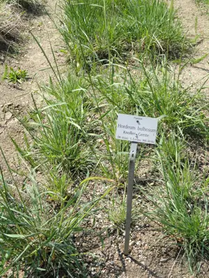

pranet · 出典付きの植物図鑑
bulbous barley
Hordeum bulbosum L. · Poaceae

Hordeum bulbosum, bulbous barley, is a species of barley native to southern Europe, northern Africa, the Middle East and as far east as Afghanistan, with a few naturalized populations in North America, South America and Australia. Since 1970 it has been used in the Hordeum bulbosum Method to produce doubled haploid (DH) wheat and barley plants by crossing it with T. aestivum or H. vulgare, followed by the elimination of the H. bulbosum chromosomes from the offspring. These DH plants are important in breeding new varieties of wheat and barley, and in scientific studies. H. bulbosum is also being looked at as a source of genes for disease resistance and other traits for barley crop improvement.
出典: Wikipedia (en): Hordeum bulbosum · CC BY-SA 4.0
異名: Critesion bulbosum (L.) Á.Löve, Hordeum brevicomum C.Presl, Hordeum kaufmannii Regel, Hordeum lycium Boiss., Hordeum nodosum L., Hordeum nodosum Ucria, Hordeum strictum Desf., Zeocriton nodosum (L.) P.Beauv., Zeocriton strictum (Desf.) P.Beauv.
同定や利用は自己責任でお願いします。この図鑑だけを根拠に野生の植物を食べないでください。
出典
- 学名: World Flora Online Plant List 2026-06 · CC0 1.0
- 名前: Wikipedia の記事名と Wikidata · CC0 1.0（Wikidata）。記事名は事実
- 説明: Wikipedia (en): Hordeum bulbosum · CC BY-SA 4.0
- 食用・毒性: World Checklist of Useful Plant Species (Diazgranados et al. 2020, RBG Kew) · CC BY 4.0
- 分布: World Checklist of Vascular Plants (WCVP), RBG Kew, version 2026-06-04 · CC BY 3.0
このページは pranet のデータから自動生成しています。コードは MIT、データは項目ごとのライセンス（説明）。